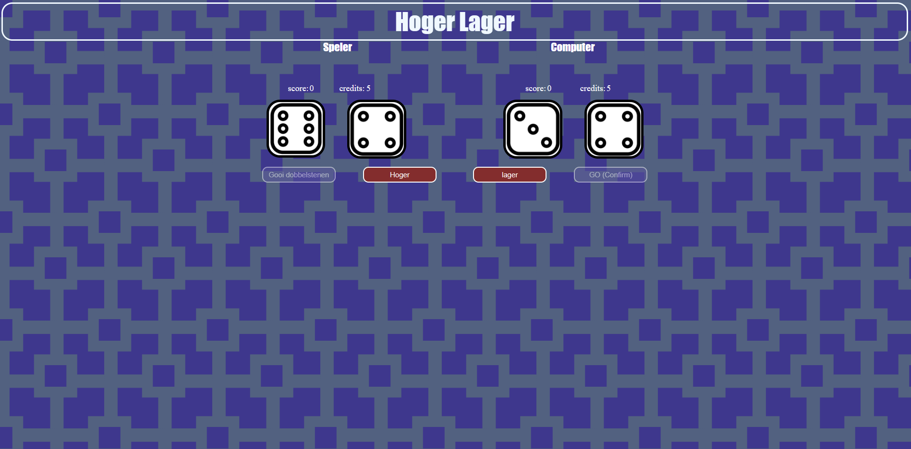

Op deze pagina ga ik wat vertellen over de projecten die ik heb gemaakt over de jaren op mijn opleiding SD (Software Sevelopment). Het vak project is bedoelt om te laten zien wat ik heb geleerd tijdens de lessen en het dan toepas in mijn projecten en ook de projecten in de themaweek. Voor elk jaar is er 4 projecten die verspreid is in 4 perioden die ik maak met klasgenoten.
Het is ook om te laten zien hoe het is om in een team te werken en te laten ervaren hoe het is om voor een klant te werken. Je kunt ook zien dat ik over de jaar nieuwe dingen heb geleerd, beter ben geworden en meer ervaring heb gekregen. De projecten die ik maak is in Visual Studio Code en ik programmeer het in het Engels en de teksten zijn in het Engels en Nederlands.
Projecten uit het 1ste jaar
Projecten van het vak Project
Higher Lower
Het eerste Project die ik maakte in mijn eerste jaar van de opleiding SD was een Hoger Lager spel die ik met een klasgenoot ging maken. We begonnen eerst met het bedenken van hoe we ons spel er uit wouden laten zien, dus gingen we eerst inspiratie opzoeken.
Daarna gingen we de spelregels maken en onze ontwerp maken van ons spel om te laten zien hoe we ons spel eruit willen laten zien. Vervolgens gingen we de layout maken en daarna variables toevoegen aan onze spel in JavaScript. Toen gingen we de rest van onze spellen programmeren zoals de dobbelstenen te laten genereren, de buttons toevoegen en disabelen maken, knoppen laten werken, achtergrond maken, scores en credits toevoegen.
In dit project had ik de basis dingen van HTML, CSS en JavaScript geleerd. De technieken die ik heb gebruikt in deze project voor HTML zijn divs, classes, imgs, buttons en labels. Bij CSS heb ik gebruik gemaakt van fonts, margins, paddings, postions, width, borders, hovers en disabels.
Voor JavaScript heb ik variabelen, datatypen, querySelector, addEventListener,textContent, functions, vergelijkingen, if-statements en Math.random() gebruikt om het spel te programmeren.
Het spel is in het Engels geprogrammeerd en de teksten zijn in het Engels en Nederlands. Het spel is ook nog eens helemaal af gemaakt. Ten slotte had ik nog een presentatie gegeven van het spel voor een cijfer.
Klik hierWhack a Mole
In het tweede project was ik bezig met het maken van een website met verschillende spellen. Dat deed ik met twee klasgenoten samen. Ieder teamlid heeft een eigen spel waar ze mee bezig zijn. Een teamgenoot maakt Boter, Kaas en Eieren en een andere teamgenoot maakt Zeeslag en ik maakte Whack a Mole.
We gingen eerst kijken naar inspiratie voor onze website en spellen. Eerst gingen we kijken welke huisstijlen we willen gebruiken voor onze website en spellen. Daarna gingen we onze spelregels en ontwerp maken voor onze eigen spellen. Vervolgens gingen we het ontwerp maken van onze landingspagina en het dan maken in HTML en CSS.
Toen begonnen we echt met het maken van onze eigen spellen zoals het maken van het bord, variabelen toevoegen etc. In dit project heb ik positioning, hover, inputs, querySelectorAll, arrays, for-loops, innerHTML, functions en classLists geleerd.
De technieken die ik heb gebruikt voor HTML, CSS en JavaScript zijn de nieuwe dingen die ik heb geleerd maar ook paar technieken die ik ook heb gebruikt bij het spel Hoger Lager zoals Math.random(), if-statements, textContent en functions.
Het spel is in het Engels geprogrammeerd en de teksten zijn in het Engels en Nederlands. Het spel was niet helemaal af, doordat het bord nog groter moest worden bij bepaalde aantal punten. Maar het was me niet gelukt en ik had niet genoeg tijd om het af te maken. Bij deze project had ik ook een presentatie gegeven met mijn teamleden voor een cijfer.
Klik hierWebcatalogus

Het derde project waar ik mee bezig was het maken van een Webcatalogus. In dit project ging ik het maken met een klasgenoot. We begonnen eerst met het maken van de huisstijl, wireframes en mockups van de algemene pagina's en onze eigen pagina's Vervolgens gingen we de home, over ons en contact pagina maken.
Daarna waren we bezig met het maken van ons eigen categorie pagina's. De Pagina die ik maak is snacks. Ik ging eerst de homepagina maken in HTML en CSS maken. Daarna was ik bezig met NodeJS om de subcategoriën te maken, zodat het op de server komt.
Ten slotte ging ik nog wat dingen fixen en het nog beetje mooier te maken, maar dat was niet echt gelukt. Doordat ik heel lang bezig was met mijn eigen categorie om de JSON data op mijn eigen pagina te zetten. Dus had ik niet genoeg tijd om het wat mooier te maken.
In dit project heb ik grid, mediaquery, responsiveness, flex, display, forms, fetch, NodeJS, Internal Modules, External Modules en Node: Express API geleerd. De technieken die ik in dit project heb gebruikt zijn de nieuwe dingen die ik heb geleerd en de dingen die ik heb geleerd uit de vorige projecten van Hoger Lager en Whack a Mole.
Er wordt in het Engels geprogrammeerd en de teksten zijn in het Engels en Nederlands. Het project was af, maar ik zelf vond dat het nog wel wat mooier kon zijn. Voor deze project ging ik ook een presentatie houden met een klasgenoot.
Voor dit project kunt u de hele website niet zien, doordat het gemaakt is in een express server. Als u de hele website wilt zien kunt u de website gaan downloaden op GitHub.
Klik hierDashboard
De laatste project die ik maakte in het 1ste jaar is een dashboard. Die ik ook maakte met 2 klasgenoten. We begonnen eerst met het maken van user-stories, huisstijl, de wireframes en mockups maken van de algemene pagina's en onze eigen pagina's maakte we wat later.
Daarna gingen we de algemene pagina's maken met bootstrap. Vervolgens gingen we onze eigen pagina's maken. Ik maakte een dashboard over bijbanen, doordat de dashboard die wij maken gericht is op de doelgroep studenten.
Ik deed dat met ChartJS om de data op de pagina te zetten via MongoDB door de data te ontvangen. Die ik heb heb gemaakt op MongoDB.
In dit project heb ik bootstrap, MongoDB, Dotenv, ChartJS, bycrypt en JWT geleerd. De technieken die ik heb gebruikt in dit project zijn de nieuwe dingen die ik heb geleerd, maar ook technieken uit de vorige projecten.
De dashboard is in het Engels geprogrammeerd en de teksten zijn in het Engels en Nederlands. Het project was nog niet af, doordat de de berichten pagina nog niet af was. Het valideren van de register pagina en inlog pagina was ook niet echt gelukt.
Voor dit project kunt u de hele website niet zien, doordat het gemaakt is in een express server en met MongoDB data.
klik hierProjecten van de themaweek
Escaperoom
Tijdens de eerste themaweek ging ik een escape room maken met 4 andere klasgenoten. De thema van onze escape room is the Heist. We begonnen eerst met het bedenken van een intro/stripverhaal en de indeling.
Vervolgens ging iedereen aan zijn eigen taken werken die op de scrumboard stond. Ieder teamlid moest ook een eigen kamer maken met een eigen puzzle. De puzzle die ik ging maken was een doolhof waarbij je een kompas gebruikt om door de doolhof te gaan.
Maar het lukte me niet echt, omdat ik het een beetje moeilijk vond en er waren ook dingen die ik nog niet had geleerd of niet wist. We kregen ook maar ongeveer 2 weken de tijd of minder om het te maken zonder lessen tussen in de een toetsweek.
In dit project had ik niet echt wat nieuws geleerd, doordat ik het project maakte met de basis dingen die ik heb geleerd van HTML, CSS en JavaScript. De technieken die ik had toegepast waren classes, imgs, variabelen, querySelector en functions.
Het project is soort van af, maar niet helemaal. Want het miste mijn puzzel en een puzzel van een ander klasgenoot. Ik heb namelijk de elementen van HTML in commentaar gezet. Je kan mijn puzzel dan ook niet zien op de pagina en alleen op de afbeelding. De escape room is geprogrammeerd in het Engels en de teksten zijn in het Engels en Nederlands.
klik hierEvent Countdown
In de tweede themaweek mocht je zelf kiezen wat voor project je wou maken en deed je het alleen. Ik ging een evenement countdown maken, omdat ik geen spel wou maken en iets simpels wou maken.
Het eerste waar ik mee begon was het maken van een plan van aanpak. In de plan van aanpak stond de missie, de probleemstelling, de doelstelling, activiteit planning, wireframes en mockups.
Daarna begon ik met het maken van de evenement countdown in HTML en CSS. Vervolgens begon ik met het programmeren in Javascript. Maar tijdens het programmeren kwam ik erachter dat er dingen zijn die ik niet had geleerd dus werkt de event countdown ook niet.
Ik had in dit project ook niet echt wat nieuws geleerd, doordat ik de technieken ging gebruiken die ik ook had geleerd bij de projecten Hoger lager en Whack a Mole, zoals classes, inputs, button, querySelector, addEventListener en functions.
Het projects is niet af, doordat ik niet zoveel tijd meer had. In dit project kreeg ook ongeveer maar 1 week de tijd of 2 weken. De evenement countdown is geprogrammeerd in het Engels en de teksten zijn in het Engels en Nederlands.
klik hier